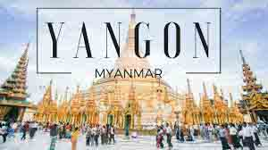
Yangon, also called Rangoon, city, capital of independent Myanmar (Burma) from 1948 to 2006, when the government officially proclaimed the new city of Nay Pyi Taw(Naypyidaw) the capital of the country. Yangon is located in the southern part of the country on the east bank of the Yangon, or Hlaing, River (eastern mouth of the Ayawaddy River), 25 miles (40 km) north of the Gulf of Martaban of the Andaman Sea. Yangon is the largest city in Myanmar and the industrial and commercial centre of the country. It was known abroad as Rangoon untill 1989, when the government of Myanmar requested that Yangon, a transliteration reflecting the Burmese pronunciation of the city's name, be used by other countries.
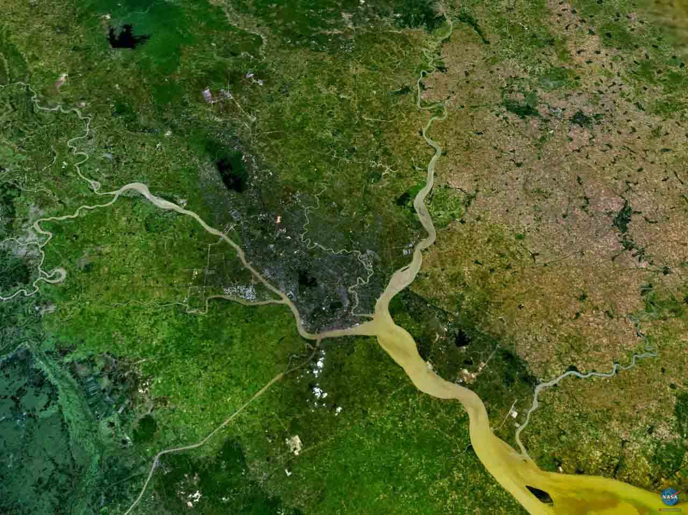
Yangon is located in Lower Burma (Myanmar) at the convergence of the Yangon and Bago Rivers about 30 km(19 mi) away from the Gulf of Martaban at 16 48' North, 96 09' East(16.8, 96.15). Its standard time zone is UTC/GMT+6:30 hours. Yangon has a tropical monsoon climate under the Koppen climate classification system. The city features a lengthy wet season from May through October where a substantial amount of rainfall is received; and a dry season from November through April, where little rainfall is seen. It is primarily due to the heaven rainfall received during the rainy season that Yangon falls under the tropical minsoon climate category. During the course of the year 1961 to 1990s, average temperatures show little variance, with average highs ranging from 29 to 36 C(84 to 97 F) and average lows ranging from 18 to 25 C(64 to 77 F).
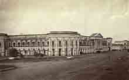
Untill the mid-1990s, Yangon remained largely constrained to its traditional peninsula setting between the Bago, Yangon and Hlaing Rivers. People moved in , but little of the city moved out. Maps from 1944 show little development north of Inya Lake and areas that are now layered in cement and stacked with houses were then virtual backwaters. Since the late 1980s, however, the city began a rapid spread north to where Yangon International Airport now stands. But the result is a stretching tail on the city, with the downtown area well removed from its geographic centre.
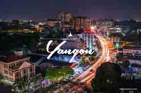
The city site is a low ridge surrounded by delta alluvium. The original settlements were located on the ridge, but the modern town was built on alluvium. Subsequent expansion has taken place both on the ridge and on delta land. The local climate is warm and humid, with much rainfall. The centre of the city, called the Cantonment, was planned by the British in 1852 and is laid out on a system of blocks, each 800 by 860 feet (245 by 262 metres), intersected regularly by streets running north-south and east-west. As Yangon's population increased in the 20th century, new settlements were built in the north, east and west that greatly expanded the city's area.

The most notable building in Yangon is the Shwe Dagon Pagoda, a great Buddhist temple complex that crowns a hill about one mile north of the Cantonment. The pagoda itself is a solid brick stupa (Buddhist reliquary) that is completely covered with gold. It rises 326 feet (99 metres) on a hill 168 feet (51 metres) above the city. Yangon is the site of several other major religious edifices, including the World Peace Pagoda (1952) and the Sule and Botahtaung pagodas.

Most of the city centre is made up of brick buildings, which are generally three to four stories high, while traditional wooden structures of red brick are common in the outlying areas. Among the old colonial structures of red brick are the Office of Ministres (formerly the Old Secretariat), the Law Courts, Yangon General Hospital and the customhouse. Modern architecture includes the Secretariat Building, the department stores in the Cantonment, the Polytechnic School, the Institute of Medicinel, and the Yangon Institute of Technology at Insein.
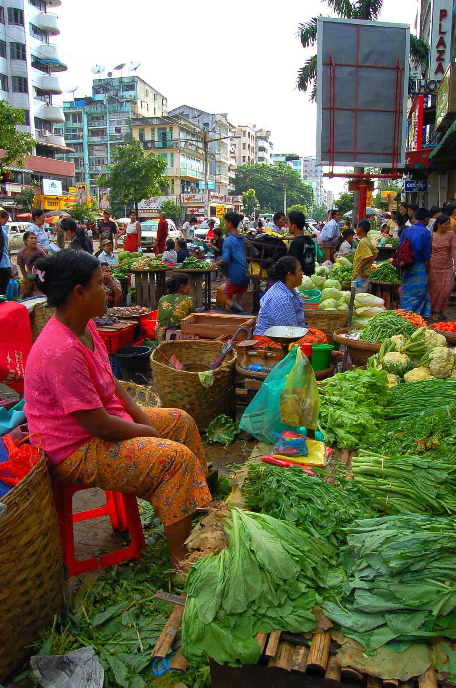
Yangon's rice mills and sawmills located along the river are the largest in the country. The city's major industries-which produce textiles, soap, rubber, aluminum, iron and steel sheet-are state-owned, while most of its small indudtries (food-processing and clothing-manufacturing establish ments) are owned privately or cooperatively. The central area of the city contains the commercial district of banks,trading corporation, and offices, as well as shops, brokerage houses, and bazaars.

Noth of the city centre is Royal Lake (Kandawgyi), surrounded by a wooded park; nearby are the city's zoological and botanical gardens.Yanagon's serveral museums included the Bogyok Aung San Museum and the National Museum of Art and Archaeology.There are several stadiums for sports and athletic events. The University of Rangoon, establish in 1920, was reconstitited into the Arts and Science University in 1964. Yangon is Myanmar's main centre for trade and handles more than 80 percent of the country's foreign commerce. Rice, teak and mental ores are the principal exports. The city is also the centre of national rail, river, road and air transportation; an international airport is located at Mingaladon, north of Yangon.

Yangon, Myanmar's largest city, is by far the most exciting place in the country to be right now,as former political exiles, Asian inverstors and foreign adventurers flock
in. As Myanmar's commercial and artistic hib,it's Yangon that most reflects the changes that most reflects the changes
that have occurred since the country reopened to the world. There's a rash of new restaurants, bars and shops. And there
are building sites- and traffic jams- everwhere.
But in many ways Yangon, formerly known as Rangoon, has hardly changed at all. The city remains focused on Shwedagon Paya
, an awe-inspiring golden Buddhist monument around which everthing else revolves. Close to it are the parks and lakes that
provide Yangonites with an escape from the surriunding chaos. Then there's downtown, its pavements one vast open-air
market, which is home to some of the most impressive colonial architecture in all Southeast Asia.
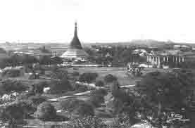
The Shwe Dagon Pagoda has been a place of pilgrimage for many centuries, and Yangon grew out of a settlement around the temple that eventually became known as Dagon. Its status was raised to that of a town by the Mon kings in the early 15th century. When King Alaungpaya (who founded the last dynasty of Myanmar kings) conquered southern Myanmar in the mid-1750s, he developed Dagon as a port and renamed it Yangon ("The End of Strife"), a name that was later transliterated as Rangoon by Arakanese interpreters accompanying the British. By the early 19th century the town had a thriving shipbuilding industry, as well as a British trading station. Rangoon was taken by the British at the outbreak of the First Anglo- Burmese War in 1824 but was restored to Burmese control two years later. The city was taken again in 1852 by the British, who made it the administrative capital of Lower Burma (i.e., the southern part of the country). After the British annexation of all of Burma in 1886, Rangoon became the capital city and grew in importance.
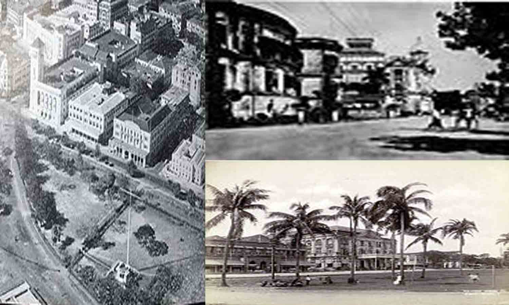
In 1930 Rangoon was struck by a massive earthquake and tidal wave, and during World War 2 it was the scene of major fighting between the Allies and the Japanese. The city was subsequently rebuilt, though, as the capital of ondenpendent Myanmar (since 1948), it never regained the commercial importance it had under the British as one of the great ports of southern Asia. By the late 20th century the city's economic vitality had declined, largely because of the isolationist policies pursued by the Myanmar government. In 2005 government offices began to be transferred to Pyinmana, a city some 200 miles (320 km) north of Yangon, followed by a transfer to the newly built capital of Nay Pyi Taw, near Pyinmana. Area city, 77 square miles (199 square km). Pop (2007 prelim). 4,090,000.
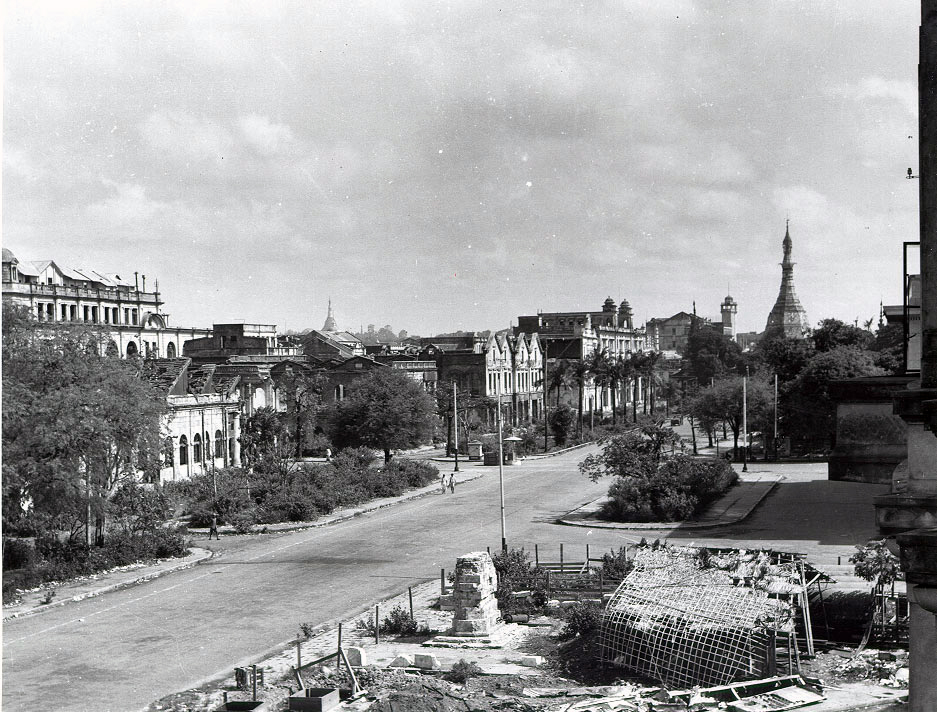
What is Rangoon called now?
Yangon formerly know as Rangoon, is the capital of the Yangon Region of Myanmar(also know as Burma). Yangon served as the captial of Myanmar untill 2006, when the military government relocated the capital to the purpose-built city of Naypyidaw in central Myanmar. With over 7 million people, Yangon is Myanmar's largest city and its most important commercial centre.
Yangon boastact the largest number of colonial-era building in Southeast Asia, and has a unique colonial-era commercial
core that is remarkably intact. The colonial-era commercial core is centred around the Sule Pagoda, which is reputed to be over 2,000 years old. The city is also home to the gilded Shwedagon Pagoda- Myanmar's most sacred Buddhist pagoda. The mausoleum of the last Mughal Emperor is located in Yangon, where he had been exiled following the Indian Mutiny of 1857.
Yangon suffers from deeply inadequate infrastructure, especially compared to other major cities in Southeast Asia. Though many historic residential and commercial buildings have been renovated throughout central Yangon, most satellite towns
that ring the city continue to be profoundly impoverished and lack basic infrastructure.
The name "Yangon" is derived from the combination of the Burmess words yan and koun, which mean "enemies" and
"run out of", resption is commonly translated as "End of Strife". The city's colonial era name, "Rangoon", likely is
derived from the Anglicization of the Arakanese pronunciation of "Yangon", which is.
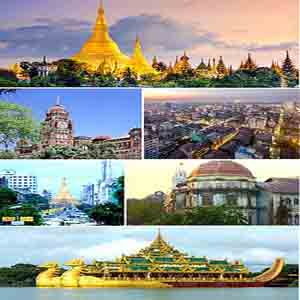
Yangon
Yangon was founded as Dagon in the 6th century AD by the Mon, who dominated Lower Burma at that time.Dagon was a small
fishing village centered about the Shwedagon Pagon.In 1755, King Alaungpaya conquered Dagon, and renamed it"Yangon".
The British captured Yangon during the first Anglo-Burmese War (1824-1826) but returned it to Burmese adminstration after
the war. The city was destroyed by a fire in 1841.

The British Empire seized Yangon and all of Lower Burma in the Second Anglo-Burmese War of 1852,and subsequently tranformed Yangon into the commercial and political hub of British Burma. Based on the design by army engineer Lt. Fraser, the British constructed a new city on a grid plan on delta land, bounded to the Pazundaung Creek and to the south and west by the Yangon River. By the 1890s Yangon's increasing population and commerce gave birth to prosperous residential suburbs to the north of Royal Lake(Kandawgyi) and Inya Lake. The British also established hospitals including Rangoon General Hospital and collages including Rangoon University.
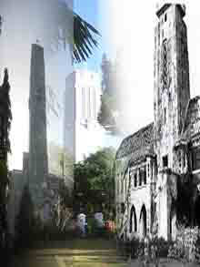
Colonial Yangon, with its spacious parks
and traditional wooden architecture, was known as "the garden city of the East". By the early 20th century, Yangon had
public services and infrasture on par with London.
Before World War 2, almost half of Yangon'spopulation was Indian or South Asia. Soon after Burma's independence in 1948, many colonial names of streets and parkwere changed to more nationalistic Burmes names. In 1989, the city's name was changed to "Yangon", along with manyother changes in English transliteration of Burmes names. Since indenpendence,
Yangon has expanded outwards. Successive governments have built satellite towns such as Thuwana and Okkalapa in the
1950s to Dagon Myothit(New Dagon) in the 1990s. Today, Greater Yangon encompasses an area covering nearly 400 square
miles (1000 sqkm). In November 2005, the military government designated the newly developed city of Naypyidaw, 200
miles (322 km) north in Mandalay Division as the new administrative capital. The motives for the move remain unclear.
At any rate, Yangon remains the largest city, and the most important commercial center of Burma.
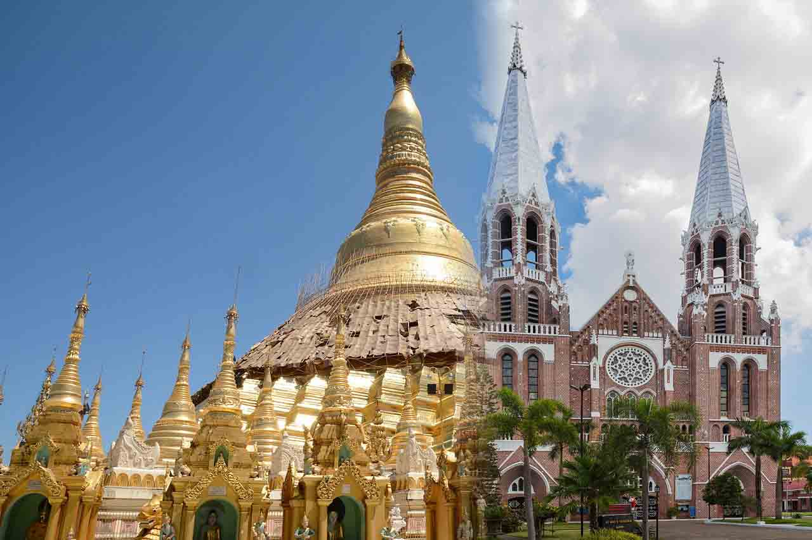
Religions
The primary
religions practised in Yangon are Buddhism, Christianity, Hinduism and Islam. Shwedagon
Pagoda is a famous religious landmark in the city.
Media
Yangon is the country's hub for the movie,music, advertising, newspaper and book publishing industries. All media is heavily regulation by the military
government. Television broadcasting is off limits to the private sector. All media content must first be approved by the
government's media censor board, Press Scrutiny and Registration Division.
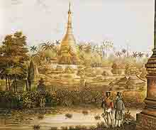
Shwedagon Pagoda
The Shwedagon Pagoda, officially named Shwedagon Zendi Daw and also known as the Great Dagon Pagoda and the Golden Pagoda, is a giled stupa located in Yangon, Myanmar. The 326-foot-tall(99 m) pagoda is situated on Singuttara Hill, to the west of Kandawgyi Lake, and dominates the Yagon skyline. Shwedagon Pagoda is the most sacred Buddhist pagoda in Myanmar, as it is believed to contain relics of the four previous Buddhas of the present kalpa.
these relics include the staff of Kakusandha, the water filter of Konagamana, a piece of the robe of Kassapa, and eight
strands of hair from the head of Gautama.
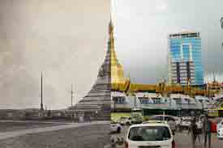
Sule Pagoda
The Sule Pagoda pronounced is a burmese stupa located in the heart of downtown Yangon, occopying the centre of the
city and an important space in contemporary Burmese politics, idelogy and geography. According to legend, it was built
before the Shwedagon Pagoda during the time of the Buddha, making it more than 2,600 years old. Burmese legend states that the site for the Shwedagon Pagoda was asked to be revealed from an old nat who resided at the place where the Sule
Pagoda now stands.
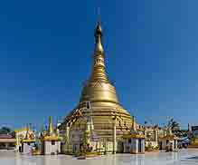
Botahtaung Pagoda
The Botahtaung Pagoda is a famous pagoda located in downtown Yangon, Myanmar,near the Yangon river. The pagoda was
first built by the Mon around the same time as was Shwedagon Pagoda according to local belief, over 2500 years ago, and
was known as Kyaik-de-att in Mon language. The pagoda is hollow within, and house what is believed to be a sacred hair of Gantama Buddha.
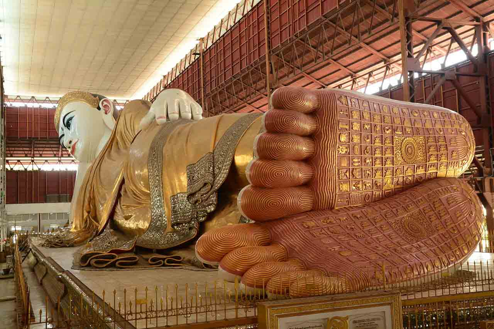
Chaukhtatgyi Buddha Temple
Chaukhtatgyi Buddha Temple is the most well-known Buddhist temple in Bahan Township, Yangon, Yangon Region
, Myanmar. It houses one of the most revered reclining Buddha images in the country. The Buddha image is 66 meteres(217 ft) long, and one of the largest on Burma. Burmese Buddhist, Sir Po Tha, in 1899. The image was complete in 1907 by another construction company, but was not proportioned corrrctly, and the Buddha's face had an aggressive expression
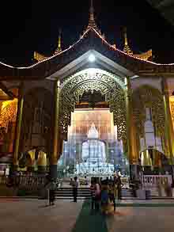
Kyauktawgyi Buddha Temple Kyauktawgyi Buddha Temple is a Buddhist temple located on Mindhama Hill on Mingaladon Township, Yangon, Burma. The temple houses a 25feet(7.6 m) feet tall Buddha called the Loka Chantha Abhaya Labha Muni, which is carved out of a single piece of white marble quarried in Sagyi Hill, Madaya Township, Mandalay Rrgion. The image weighs approximately 560 tons. The Buddha is carved making the abhayamudra, the gesture of fearlessness.
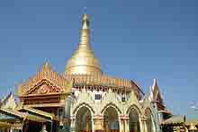
Kaba Aye Pagoda
Kaba Aye Pagoda formally Thiri Mingala Gaba Aye Zedidaw, is a pagoda located on Kaba Aye Road, Mayangon
Township, Yangon, Myanmar. The pagoda was built in 1952 by U Nu in preparation for the Sixth Buddhist Councill
that he held from 1954-1956. The pagoda measures 111 feet (34 m) high and is also 111 feet (34 m) around the base. The
pagoda is located approximately 11 km north of Yangon, a little past the Inya Lake Hotel. The Maha Pasana Guha (great
cave) was built simultaneously with the Kaba Aye Pagoda and is located in the same complex. The cave is a replica of the
Satta Panni cave, located in India, where the first Buddhist Synod was convened. The six entrances of The Maha Pasana
Cave symbolize the Sixth Great Synod. The cave is 455 feet (139 m) long and 370 feet (110 m) wide. Inside, the
assembly hall is 220 feet (67m) long and 140 feet (43 m) wide.
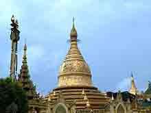
Maha Wizaya Pagoda
The Maha Wizaya Pagoda is a pagoda located on Shwedagon Pagoda Road in Dagon Township, Yangon, Myanmar. The
pagoda, built in 1980, is located immediately south of the Shwedagon Pagoda on Dhammarakhuita Hill. The enshrined relics
were contributes by the King of Nepal, while the pagoda's hti(umbrella) was consecrated by Ne Win, the country's former
leader. The construction of this particular pagoda is believed by some scholars to have been a form of merit-making on
the part of Ne Win. The pagoda was bulit to commemorate the convening of the First Congregation of All Orders for the
Purification, Perpetuation and Propagation of Sasana in1980, which formed the State Sangha Maha Nayaka Committee, a
governmental regulatory body of Buddhist monks.
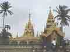
Ye Le Pagoda
Kyauktan Ye Le Pagoda, formally Kyaikhmawwun Yele Pagoda is a Buddhist pagoda located in Kyauktan Township
, Yangon Region, on a small island in Hmaw Wun Creek, a tributary of Yangon River. The pagoda was built with many
Buddha's reclis inside. Two thing are noticed, the water level never rises to cover the pagoda, and there will always be
visit the pagoda (meaning, even the pagoda has small room for visitors somehow it is always balanced out between those
who is coming & leaving).
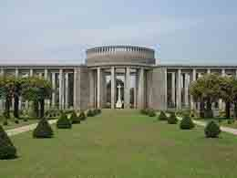
Taukkyan War Cemetery The Taukkyan War Cametery is a cemetery for Allied solider from the British Commonwealth who died in battle in Burma duing the Second World War. The cemetery is in the village of Taukkyan, about 25 kilometer(16 mi) north of Yangon on Pyay Road. It is maintained by the Commonwealth War Graves Commission. The cemetery contains the graves of 6,374 solider who died in the Second World War, the graves of 52 soliders who died in Burma during the First World War, and memorial pillars(The Rangoon Memorial) with the names of over 27,000 Commonwealth solider who died in Burma during the Second World War in the Burma Campaign but who have no known grave. There are 867 graves that contain the remains of unidentified soliders. It is one of the most visited and high rated war sites of all Asia.
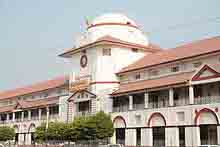
Bogyoke Aung San Market Bogyoke Aung San Market formerly Scott's Market is a major bazaar located in Pabendan township in central Yangon, Myanmar. Known for its colonial architecture and inner cobblestone streets, the market is a major tourist destination, dominated by antuque, Burmese handicraft and jewellery shops, art galleries, and clothing stores. Bogyoke Market is a popualr black market location to exchange currency. The market also has a number of stores for local shoppers, selling medicine, foodstuffs, garment and foreign goods.
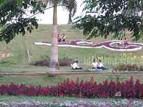
Inya LakeInya Lake formerly,Lake Victoria is the largest lake in Yangon, Burma (Myanmar), a popular recreation area for Yangonites, and a famaous location for romance in popular culture. Located 6 mile(10 km) north of downtown Yangon, Inya Lake is bounded by Parami Road on the north, Pyay Road on the west, Inya Road on the southwest, U niversity Avenue on the south, and Kaba Aye Pagoda Road on the east. Inya Lake is an artificial lake created by the British as a water reservoir between 1882 and 1883 in order to provide a water supply to Yangon. The lake was formed by joining small hills that surrounded creeks which formed during the monsoon season. A series of pipes and cables distributes water from Inya Lake to Kandawgyi Lake near downtown Yangon.
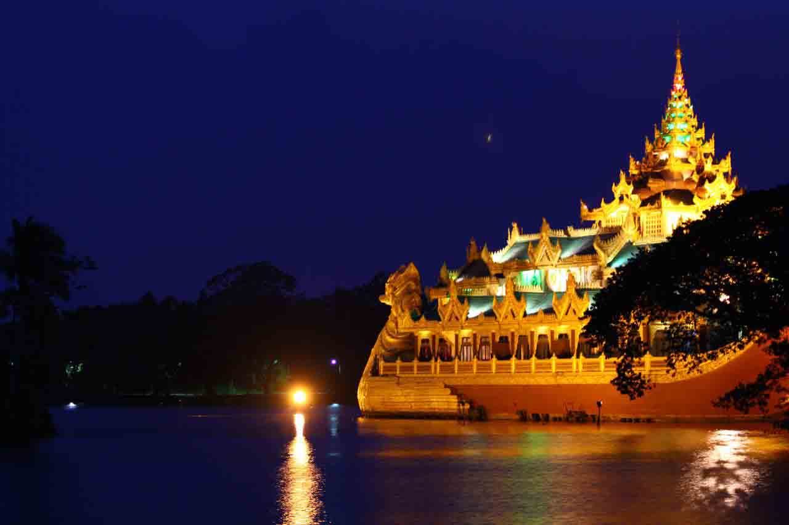
Kandawgyi LakeKandawgyi Lake literally"great royal lake", formelly Royal Lake, is one of two major lakes in Yangon, Burma(Myanmar). Located east of the Shwedagon Pagoda, the lake is artificial; water from Inya Lake is channelled through a series of pipes to Kandawgyi Lake. It was created to provide a British colonial administration. It is approximately 5 miles(8 km) in circumference, and has a depth of 20 to 45 inches (50 to 115 cm). The 150-acre(61 ha) lake is surrounded by the 110- acre(45 ha) Kandawgyi Nature Park, and the 69.25-acre(28-hectare) Yangon Zoological Gradens, which consists of a zoo, an aquarium and amusement park.
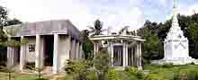
Mausolea
TheKandawmin Garden Mausoleacomprise a mausoleum comolex in Yangon, Yangon, Myanmar. The site contains four mausolea of Burmese national figures and is located near the southern gate of Shwedagon Pagoda. The successive Burmese military governments feared that the mausolea might become a meeting place for democracy activists and they fell into a state of neglect. The former miliitary regime omitted them from the Yangon City Heritage List because they are symbols of national liberty and considered a threat to its status and power. The site contains mausolea of Supayalat, queen consort of the last king of Myanmar; the nationalist and writer Thakin Kodaw Hmaing; former UN Secretary-General U Thant; and Aung San Suu Kyi's mother, Khin Kyi.
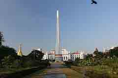
Maha Bandula Park
The Maha Bandula Park or Maha Bandula Garden is a public park, located in downtown Yangon, Burma. The park
is bounded by Maha Bandula Garden Street in the east, Sule Pagoda Road in the east, Sule Pagoda Road in the west, Konthe
Road in the south and Maha Bandula Road in the north, and is surrounded by some of the important buildings in the area such as the Sule Pagoda, the Yangon City Hall and the High Court. The park is named after General Maha Bandula who fought
against the British in the First Anglo-Burmese War (1824-1826).
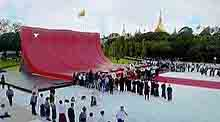
Martyrs' Mausoleum
The Martyrs' Mausoleum is a Mausoleum in Yangon, Myanmar(Burma), locates near the northern gate of Shwedagon Pagoda. The mausoleum is dedicated to Aung San and other leaders of the pre-independence interim government, all of whom
were assassinated on 19 July 1947. It is customary for high-ranking government officials to visit the mausoleum on 19 July to pay respects, and 19 July was designated as Martyrs' Day, a public holiday. On 19 July 1947, at approximately
10:37am., BST, several of Burma's independence leaders were gunned down while they were holding a cabinet meeting at the
Secretariat in downtown Rangoon. The assassinations were planned by a rival political group, and the leader and alleged
mastermind of that group Galon U Saw, together with the perpetrators, were tried and convicted by a special trubunal
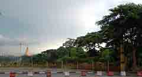
People's Square and Park The People's Square and Park is one of the major parks surrounding the Shwedagon Pagoda in Yangon, Myanmar. Located west of the great pagoda to the former Pyithu Hkuttaw(People's Parliament) complex, the 135.72acre(54.92-hectare) park is bounded by Pyay Road to its west, U Wisara Road to its east, Dhammazedi Road to its north and Ahlone Road to its south. The area had been part of the palace grounds of Queen Shin Sawbu and later a golf course for some years during the colonial days.
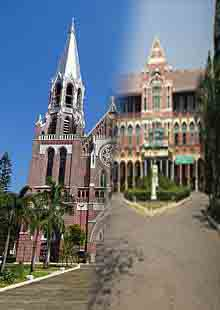
St. Mary's Cathedral,Yangon
Saint Mary's Cathedral or Immaculate Conception Cathedral is a Catholic cathedral located on Bo Aung Kyaw
Street in Botahtaung Township, Yangon, Burma. The cathedral's exterior, of red brick, consists of spires and a bell tower
. It was designed by Dutch architect Joseph Cuypers, son of Pierre Cuypers. The cathedral is the largest in Burma.
Located on the grounds of the cathedral is Basic Education High School No.6, which is locally known as "Sait Paul's"
Heigh School, although it has no religious affiliation with the Catholic Church today.
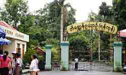
Yangon Zoological Gardens
TheYangon Zoological Gardens is the oldest and the second largest zoo in Myanmar. Located immediateiy north of
downtown Yangon near Kandawgyi Lake, the 70-acre (28 ha) recreational park also includes a museum of natural history, an
aquarium and an amusement park. With a collection of nearly 200 species and 1100 animals, the zoo draws nearly 2.2 million visitors annually. The zoo was operated by the Forest Department under the Ministry of Forestry untill April
2011, and is now operated by a private firm.
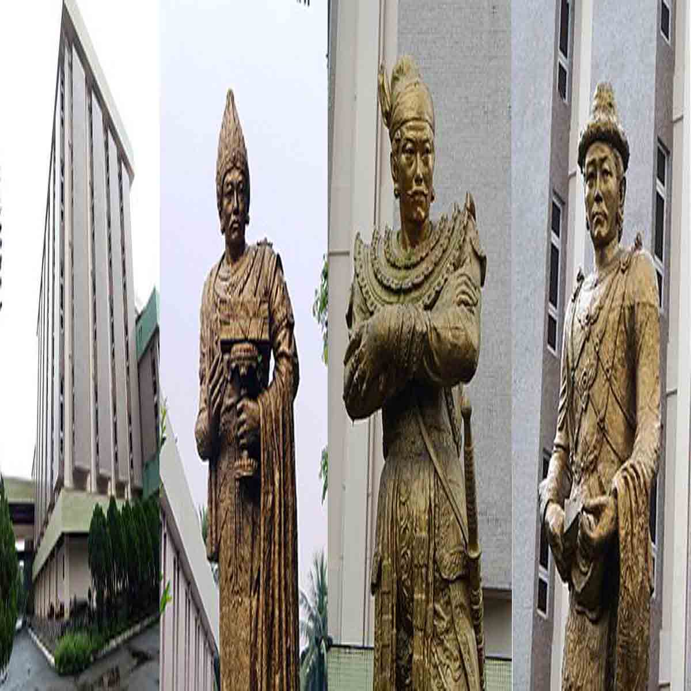
National Museum of Myanmar
The National Museum(Yangon), located in Dagon, Yangon, is the one of the national museum of Burmese art, history
and culture in Myanmar. Founded in 1952, the five-story museum has an extensive collection of ancient artifacts, ornament
, works of art, inscriptions and historic memorabilia, related to history, culture and cicilization of Burmese people.
The National Museum of the Union of Burma was first opened in June, 1952 at the Jubilee Hall Building on Shwedagon
Pagoda Road, Yangon. The museum was moved to a larger location at 24/26 Pansodan Street in 1970, and to its present
location in 1996. The new five story National Museum has been open to public since 18 September 1996. Myanmar Gems
Museum, in a Yangon, Myanmar, is a museum dedicated to precious Burmese gem stones. The museum is located on the
third floor of a four-story building, located near Kaba Aye Pagoda.
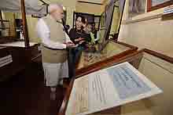
Bogyoke Aung San Museum
The Bogyoke Aung San Museum located in Bahan, Yangon, is a museum dedicated to General Aung San, the founder
of modern Myanmar(Burma). Established in 1962, the two-story museum was Aung San's last residence before his assassination in July 1947. It is a colonial-era villa, built in 1921, where his daughter Aung San Suu Kyi grew up as a
child. The museum, with its focus on Gen. Aung San's short adult life, is complementary to the Bogyoke Aung San
Residence Museum in Natmauk, Magwe Division, which is dedicated to his childhood and family memorabilia. It houses
exhibits on his life story and general memorabilia which includes clothing, books, furiture, family photos and the late
general's car. For many years, the museum was opened only for three hours each year-on the Martyrs' Day of 19 July,
from 9 am to 4 pm. The restriction is in line with the current military government's policy of restricting any mention
of Gen. Aung San in the media in order to marginalize Aung San Suu Kyi. The museum formally reopened on 24 March 2012.
National Theatre of Yangon
The National Theatre of Yangon located in Yangon, is a national theatre of Myanmar. The theatre is used for cultural exchange programs with foreign countries, for departmental workshops, religious ceremonies, prize giving
ceremonies, performing arts comprtitions, and for musical stage shows. The theater was constructed with aid from
People's Republic of China. Cinstruction began on 3 June 1987 and complete on 30 January 1991. Of the total cost of 215.47 million kyats, the Chinese government contributed 150 million kyats and the Burmese side contributed the
remainder.